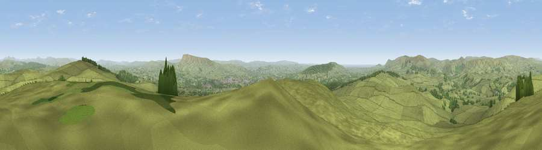

Viewpoint near Newton
#5282 in England · top 8% of its area beats it · near NewtonThe view, rendered

A 360° render of this exact spot computed from the terrain model, tree cover and land cover — summer colours, afternoon light, calibrated against photographs of famous viewpoints. Real trees, hedges and buildings will differ in detail.
The panorama
Grey silhouette: terrain skyline in each direction (720 bearings, Earth curvature and refraction included). Dashed green: skyline with trees (+15 m) and buildings (+8 m) as obstacles. Blue strip: how far the ground is visible on each bearing.
Where the view opens
Wedge length = distance to the farthest visible ground on that bearing (vegetation-aware). Rings at 10, 25 and 50 km.
What fills the view
90% grassland · 8% woodland · 1% built-up
Angular shares of the visible panorama (visual magnitude), not map area. Landscape diversity 0.16 (0–1 Shannon).
Key numbers
More beautiful places nearby
The staircase of upgrades: each row has a higher view potential than everything closer. Driving times are estimates from straight-line distance, calibrated against real road routing — check an actual route before setting out.
| Place | Direction | Drive | Score |
|---|---|---|---|
| Totridge Fell | W · 8 km | ~16 min | 75.1 |
| Whins Brow | NW · 10 km | ~19 min | 76.3 |
| Pendle Hill | SE · 11 km | ~21 min | 76.5 |
| Parlick | WSW · 12 km | ~23 min | 77.5 |
| Viewpoint near Scorton | W · 19 km | ~33 min | 79.9 |
| Darwen Hill | S · 26 km | ~42 min | 80.7 |
| Warton Crag | NW · 34 km | ~52 min | 83.2 |
| Viewpoint near Grange-over-Sands | NW · 44 km | ~64 min | 83.4 |
53.92296, -2.43584 · source: screening · position refined by local search. Computed location — check access rights before visiting.